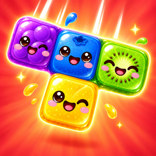

Support
Juicy Block
Need help or found a bug?
Tell us what happened and on which iPhone. We read everything.
Quick answers
How do I play? Drag a block from the tray onto the board. Fill a full row or column to clear it. When no block fits, the run ends.
What is the juice glass? Every cleared line pours juice into the glass. A full glass brews a cocktail and starts a Juice Rush with bonus points.
When does the Daily open? After your first finished Rounds run. A new Daily starts every day at midnight, your local time, and you get one try per day.
Does it need internet? No. Juicy Block works fully offline. When you are online, it only checks whether a new version is available.
Will I lose my progress? Progress is saved on your iPhone. Deleting the app removes it.